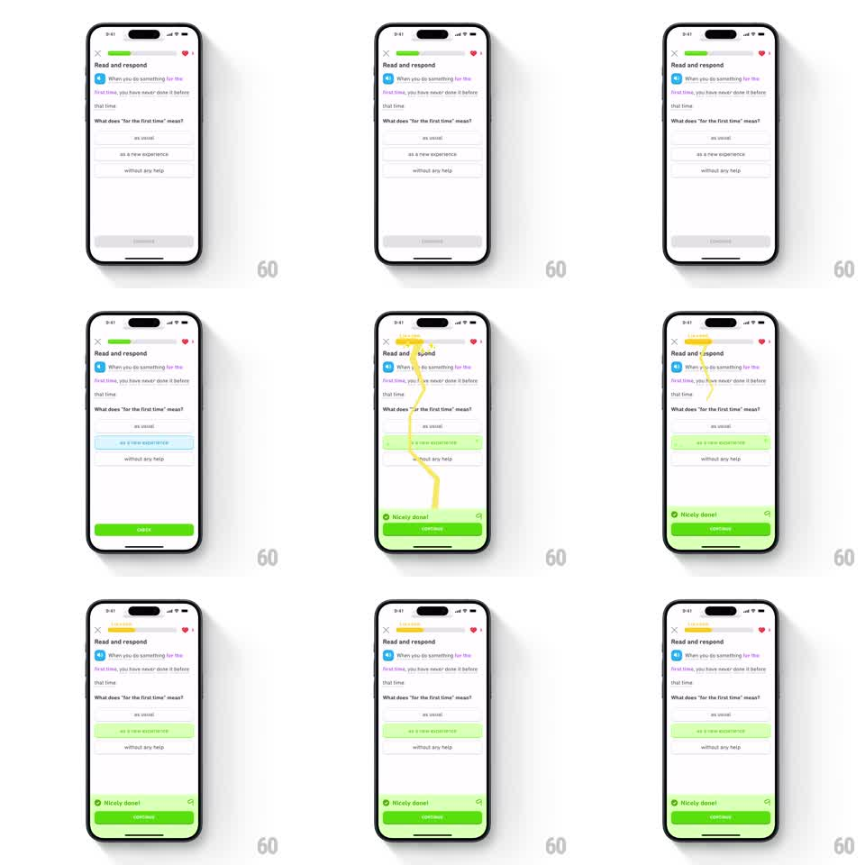

Media
Frame-by-frame

Rebuild this animation 1:1: Duolingo's 5-in-a-row streak moment - a lightning bolt cracks down from the streak flame at the top, zigzags through the correct answer, and lands on the Continue button as the "Nicely done!" banner slides in.

Rebuild this animation 1:1: Duolingo's 5-in-a-row streak moment - a lightning bolt cracks down from the streak flame at the top, zigzags through the correct answer, and lands on the Continue button as the "Nicely done!" banner slides in.
## Integration
Integration: stack-agnostic spec - springs given as stiffness/damping, timed motions as duration + curve; map every value to your framework and animation library of choice.
## Scene
A Duolingo "Read and respond" exercise: streak flame and progress bar at top, the prompt and three answer options, the correct one ("as a new experience") highlighted green. On answering, a jagged yellow lightning bolt strikes from the streak flame down through the correct answer to the green Continue button, while a "5 in a row!" badge flashes at the flame and the "Nicely done!" banner appears above Continue.
## Motion spec
Pattern: lightning strike path, ~1.5s total.
- The streak flame pulses and a "5 in a row!" tag pops in beside it (spring stiffness 400 damping 18).
- The bolt draws itself from the flame downward in 3 to 4 jagged segments (stroke-on, 350ms total), branching slightly, with an electric glow and a fast flicker (opacity strobe at 60ms intervals).
- It passes through the correct answer row, which flashes brighter green on contact, and terminates on the Continue button, which surges (scale 1.05, 150ms) and glows.
- The bolt fades out in segments from top to bottom (250ms), leaving the "Nicely done!" banner slid up above the button (spring stiffness 320 damping 24).
## Calibration
- The bolt is angular and hand-drawn in feel - sharp zigzags, not a smooth curve.
- Every element it touches reacts: flame, answer row, button.
## Reduced motion
The answer and button flash once; no bolt.
## Don't miss
- The bolt's path connects three specific points: flame, correct answer, Continue.
- The lesson content stays put - the effect is an overlay, not a layout change.